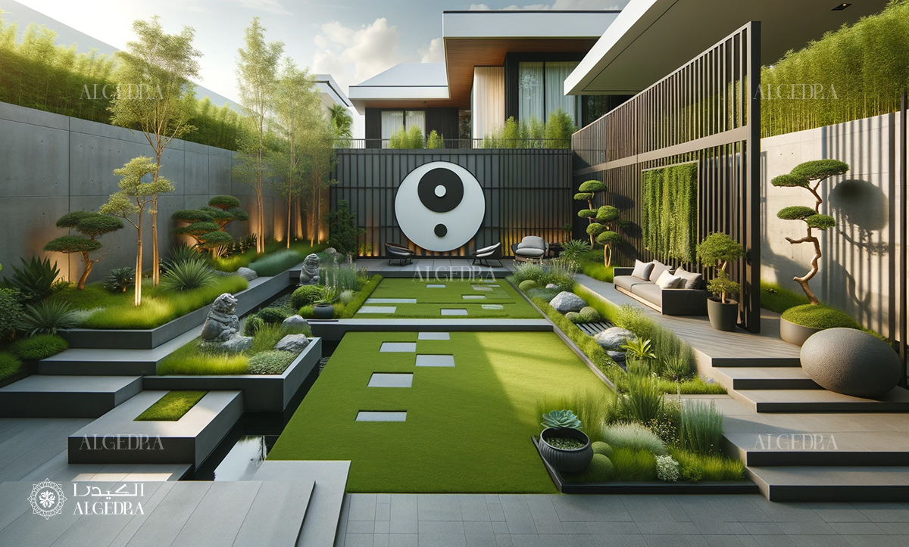

Mobilya Sanati...
Modern ve Güçlü tasarımlarla evinizi yenileyin. Mobilya modası trend renkler ve güçlü tasarımlarla yaşam alanınıza kimlik kazandıracak. Kişiliğinizi yansıtan yeni sezon modüler tasarımlar, işlevsel mobilyalar ve ön plana çıkan koleksiyonlarla mobilya modası şimdi Tatami'de. Yeni sezon koltuk takımları, yatak odası ve yemek odası takımları yeni koleksiyonlarla şimdi daha şık ve estetik dokunuşlara sahip.
Her zihin, arkaik mobilyalarla dolu bir odadır.
-Dee Hock
TatamiSTYLE Blog
Feng Shui
Feng Shui; doğa ve su anlamına gelir. Doğadaki yaşam enerjisini yaşam alanında da harekete geçirmeyi sağlayan bir Çin felsefesi diyebiliriz. Bazen bir mekana gittiğinizde kendinizi çok huzurlu hisseder ve oradan ayrılmak istemeyebilirsiniz; bazen de bir an önce gittiğiniz mekandan uzaklaşmak istersiniz. Fen Shui’nin ise bunun sebebini açıkladığı iddia edilir.
Sehpalar

Her evin olmazsa olmaz mobilyalarından birisi de sehpalar. Sehpalar o kadar ilginç mobilyalar ki her tarza uydukları gibi kullanılan alanın havasını değiştirebilme yetenekleri var. Dekorasyon amaçlı kullanılabilecekleri gibi Tiny House yazımızda da bahsettiğimiz üzere çok amaçlı da kullanılabilirler. Bazen, özellikle orta sehpalar, salon ya da oturma odalarındaki star parça olabilirler. Diğer mobilyaların kendilerini göstermeleri için sehpa üstü dekorasyon ve sehpa kullanım şekilleri çok önemli.
- TV Sehpalari
- Komidinler
- Sehpa Tasarimlari
Yatak Odasi

Yatak odası evin en konforlu ve işlevsel olması gereken yerlerinden birisidir. Çünkü evde asıl dinlendiğimiz alan yatak odalarımızdır. Bununla birlikte yatak odaları kişisel alanımızdır ve buralarda kişisel birçok eşyamız bulunur. Uyuduğumuz, dinlendiğimiz ve kendimizle zaman geçirdiğimiz alan yatak odası olunca, buranın dekorasyonu için de ayrıca zaman harcamak ve ince düşünmek gerekmektedir.
- Gardiroplar
- Aynalar
- Berjer
Salon
Geniş Salonlar İçin Dekorasyon Önerileri

Salonlar, evinizin iç dizaynını yansıtmada en önemli husus haline gelen odadır. Salonlar bir evin ihtişamını, sadeliğini, şıklığını ve zarafetini temsil eden öğe haline gelmiştir. Bu yüzden özellikle geniş bir salona sahipseniz biraz sonra bahsedeceğimiz dekorasyon önerilerin, en ince ayrıntısına kadar araştırmanızda ve uygulamanızda fayda var. Evinize gelen misafirleri, geniş salonunuzda yaptığınız güzel dekorasyon ile etkilemeniz bu yazıdan sonra daha kolay hale gelecek.
- Duvar Kagitlari
- Perdeler
- Yemek Masalari